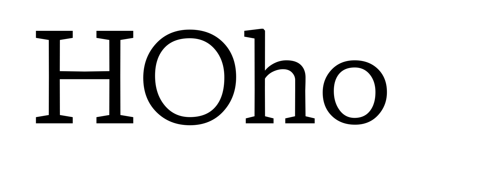
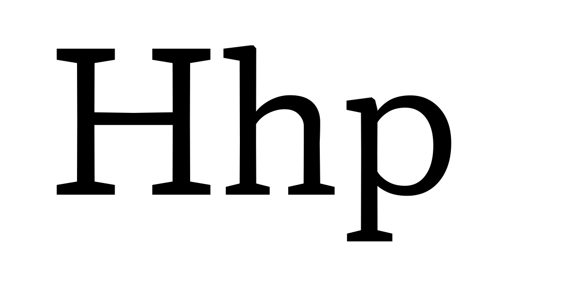
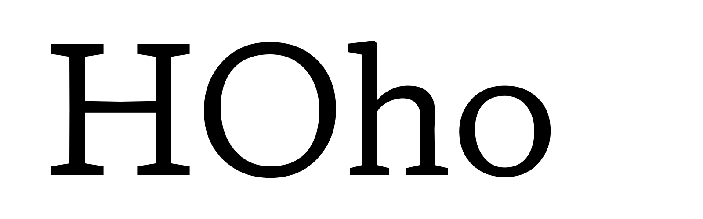
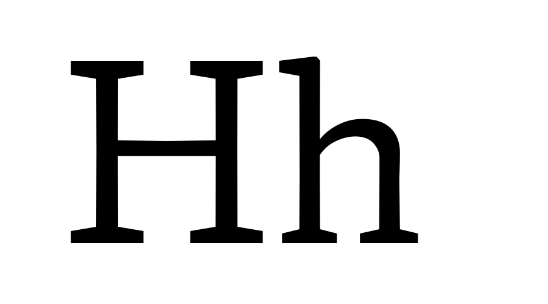
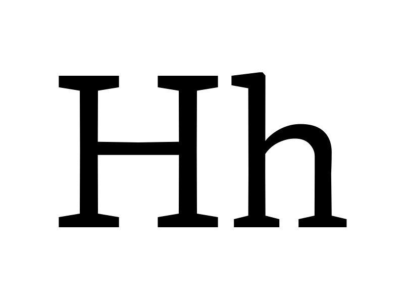
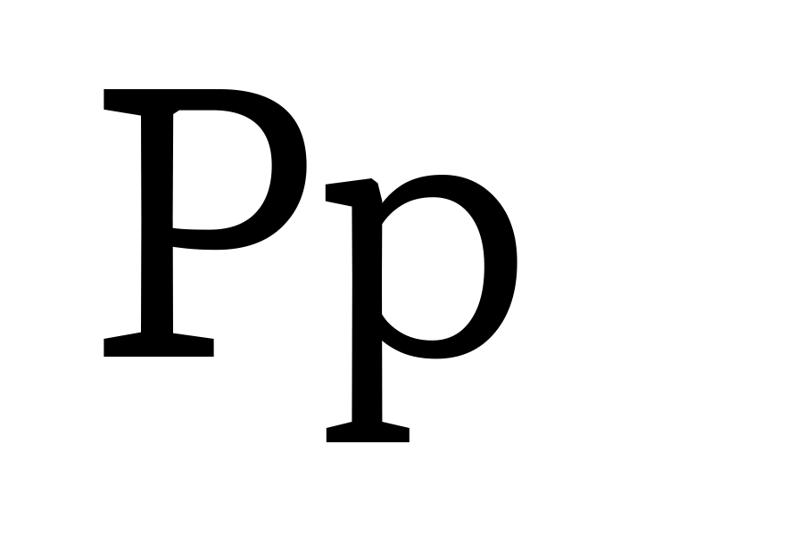

xtra
Tag: xtra
Name: x transparent
Description: assigns a “white” per mille value to each instance of the design space
Valid numeric range: Values must be in the range -1000 to 2000
Scale interpretation: Values can be interpreted as per-mille-of-em
Recommended “normal” value: Sample value 400
Suggested programmatic interactions: Applications may choose to select a variant in connection to an input, or it might be programmatically used
Suggested user interactions: Users may choose to program a variant in connection to direct or conjunctive input for a page description language, or via a user interface
Demo
xopq
Tag: xopq
Name: x opaque
Description: assigns a “black” per mille value to each instance of the design space
Valid numeric range: Values must be in the range -1000 to 2000
Scale interpretation: Values can be interpreted as per-mille-of-em
Recommended “normal” value: Sample value 88
Suggested programmatic interactions: Applications may choose to select a variant in connection to an input or it might be programmatically used
Suggested user interactions: Users may choose to program a variant in connection to direct or conjunctive input for a page description language, or via a user interface
Demo
ytra
Tag: ytra
Name: y transparent
Description: assigns an overall “white” per mille value to each instance
Valid numeric range: Values must be in the range 0 to 2000
Scale interpretation: Values can be interpreted as per-mille-of-em
Recommended “normal” value: Sample value 884
Suggested programmatic interactions: Applications may choose to select a variant in connection to an inpu, or it might be programmatically used
Suggested user interactions: Users may choose to program a variant in connection to direct or conjunctive input for a page description language, or via a user interface
Demo
yopq
Tag: yopq
Name: y opaque
Description: assigns a “black” per mille value to each instance of the design space
Valid numeric range: Values must be in the range -1000 to 2000
Scale interpretation: Values can be interpreted as per-mille-of-em
Recommended “normal” value: Sample value 116
Suggested programmatic interactions: Applications may choose to select a variant in connection to an input or it may be programmatically used.
Suggested user interactions: Users may choose to program a variant in connection to direct or conjunctive input for a page description language, or via a user interface
Demo
ytlc
Tag: ytlc
Name: y transparent lowercase
Description: assigns a “white” per mille value to each instance of the design space
Valid numeric range: Values must be in the range 0 to 1000
Scale interpretation: Values can be interpreted as per-mille-of-em
Recommended “normal” value: Sample value, 500
Suggested programmatic interactions: Applications may choose to select a variant in connection to an input, or it might be programmatically used.
Suggested user interactions: Users may choose to program a variant in connection to direct or conjunctive input for a page description language, or via a user interface
Demo
ytuc
Tag: ytuc
Name: y transparent uppercase
Description: a “white” per mille value for each Uppercase Height in the design space
Valid numeric range: Values must be in the range -1000 to 1000
Scale interpretation: Values can be interpreted as per-mille-of-em
Recommended “normal” value: Sample value 725
Suggested programmatic interactions: Applications may choose to select a variant in connection to an input or it might be programmatically used.
Suggested user interactions: Users may choose to program a variant in connection to direct or conjunctive input for a page description language, or via a user interface
Demo
ytde
Tag: ytde
Name: y transparent descender
Description: assigns a “white” per mille value to each instance of the design space
Valid numeric range: Values must be in the range -1000 to 0
Scale interpretation: Values can be interpreted as per-mille-of-em
Recommended “normal” value: Sample value -250
Suggested programmatic interactions: Applications may choose to select a variant in connection to input, or i the axis be programmatically used with input like line-spacing
Suggested user interactions: Users may choose to program a variant in connection to direct or conjunctive input for a page description language, or via a user interface
Demo
ytas
Tag: ytas
Name: y transparent ascender
Description: assigns a “white” per mille value to each instance of the design space
Valid numeric range: Values must be in the range 0 to 1000
Scale interpretation: Values can be interpreted as per-mille-of-em
Recommended “normal” value: Sample value 750
Suggested programmatic interactions: Applications may choose to select a variant in connection to an input, or it might be programmatically used
Suggested user interactions: Users may choose to program a variant in connection to direct or conjunctive input for a page description language, or via a user interface